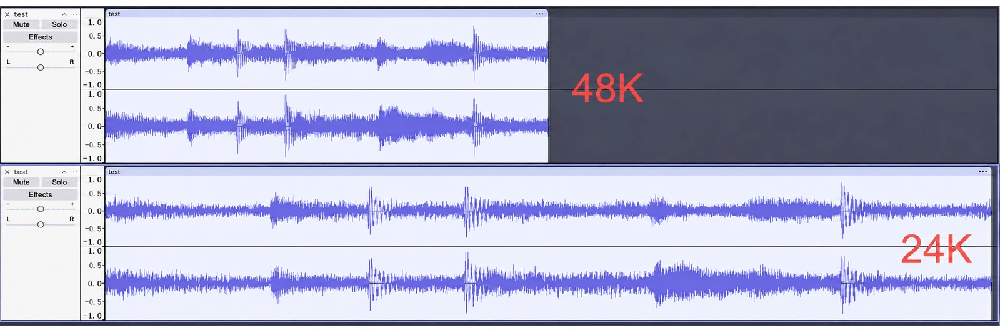
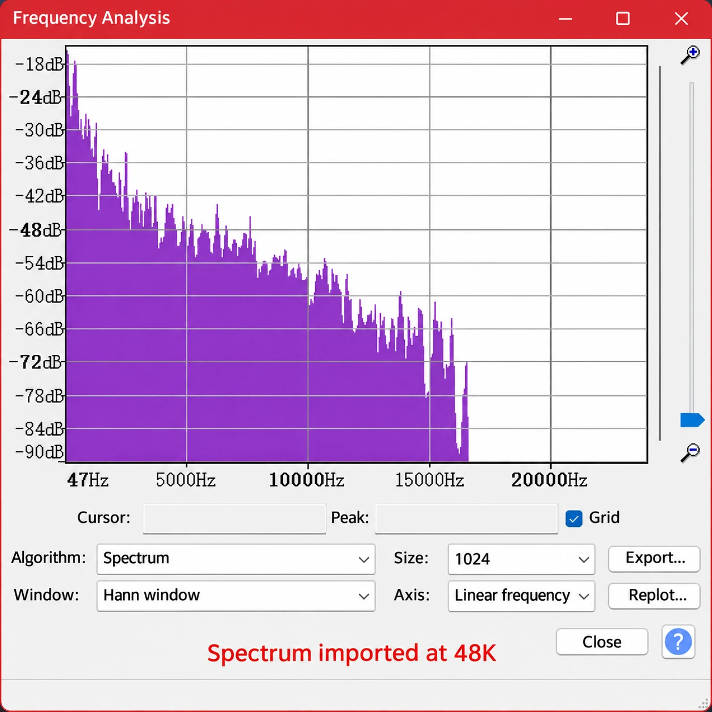
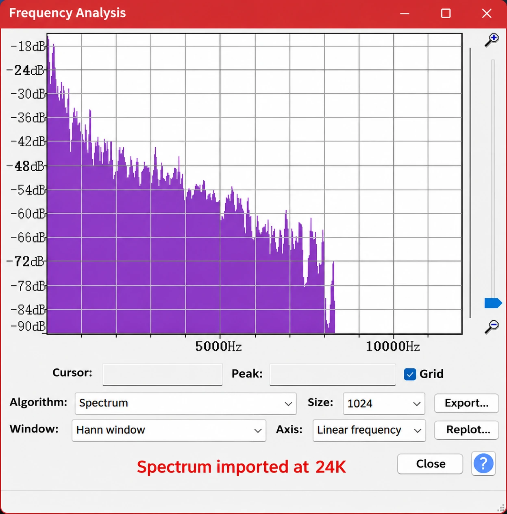

From Imaginary Numbers to FFT — Part 3: The Discrete Fourier Series
Another way to look at signal decomposition
In the previous post, we explained how any discrete-time signal can be broken down into weighted, shifted unit impulses. This is undoubtedly the most intuitive time-domain view.
We then derived the result that, after a complex exponential passes through a linear time-invariant system, only its amplitude and phase change; its frequency stays the same. That gave us an idea: could we break any discrete-time signal down into a series of complex exponentials? Then we could take full advantage of their wonderful mathematical properties.
This post will explain why that decomposition works. For discrete-time periodic signals, it is called a Fourier series. Fourier series give us a new way to understand signals: the frequency-domain view.
Expanding a periodic discrete-time signal into a Fourier series (DFS)
In a Fourier series, we want to break a periodic discrete-time signal down into a weighted sum of these N complex exponentials. Put another way, we want to weight these N complex exponentials and add them together so that they fit the original signal exactly. (Why these N complex exponentials, whose frequencies are multiples of one another? Well, because their special relationship lets us solve for ! You will see what I mean when we get to the derivation.)
Assuming a discrete-time signal can be expanded in this family of complex exponential sequences, we get:
It is important to emphasize that here is a complex number. As we mentioned at the beginning, multiplying a complex exponential by a complex number changes its amplitude and phase. This expression represents a discrete-time signal as a complex-weighted sum of N complex exponentials whose frequencies are multiples of one another.
Next, let’s solve for .
First, apply the same operation to both sides of the expression above:
Observe that
so we can simplify to
Using this method, we can find . As we said earlier, is the complex weight of —in other words, the amplitude and phase of in the original signal. Similarly, is the complex weight of .
That is the derivation of the Fourier series. It proves that we really can break any discrete-time signal down into a complex-weighted sum of N complex exponentials.
Do we need to discuss convergence for DFS?
Let’s look at this expression again:
You will notice that it is actually N equations:
Since the N complex exponentials we chose are orthogonal, and is known, we can set up N equations and solve for . Easy enough, right? So this system of equations always has a solution. The family of complex exponential sequences can always fit the original sequence exactly, and there is no convergence issue.
The reason for bringing up convergence is that, for continuous signals, the Gibbs phenomenon can occur. If you are interested, you can look it up. Since this series only discusses discrete-time signals, I will not go into it further here.
The physical meaning of a discrete-time complex exponential
Yes, we really can break down into a series of complex exponentials.
But what frequency does the complex exponential actually have? And what frequency does have?
In fact, that is something we specify ourselves. Let’s try an experiment.
Import test.wav from my earlier post into Audacity at 48K, then import it again at 24K, and plot their spectra.
Getting Started with Embedded Audio: I2S and TDM in Practice · Download the lab files, including test.wav

We find that, when imported at 24K, not only does the audio last twice as long, but everything sounds much deeper.
Looking at the spectra, even though their shapes are exactly the same, the frequencies on the x-axis for the 24K import are actually half those of the 48K import. Simply put, what a discrete-time signal sounds like in the physical world is determined entirely by the frequency we specify when opening it. The frequencies of the individual complex exponentials it decomposes into are therefore also assigned when we open the file for playback.




The discrete Fourier transform (DFT)
Copy and paste a nonperiodic signal to make it periodic, then treat it as a periodic signal and apply DFS. That is DFT.
The Fast Fourier Transform (FFT)
FFT is a fast algorithm for DFT. It takes advantage of some mathematical symmetries in DFT to make it run faster on a computer.